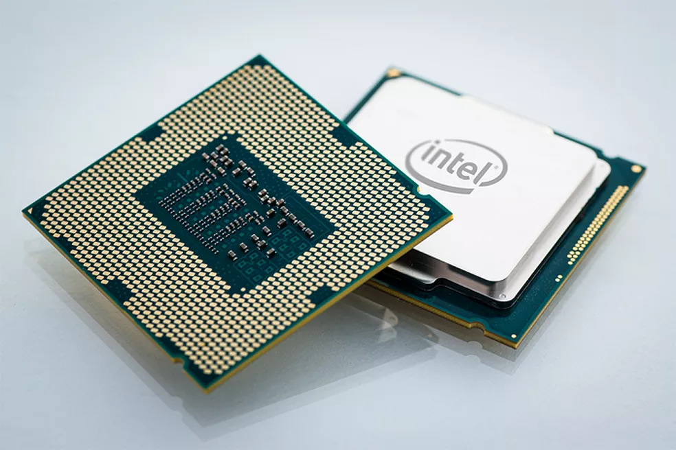

Introdução à Informática
Fundamentos de Hardware
Definição
Hardware é a parte física e tangível de um computador, ou seja, são os componentes eletrônicos e mecânicos que o compõem. Esses componentes são responsáveis pelo processamento de dados, armazenamento e transmissão de informações. O hardware é um elemento indispensável para o funcionamento de um computador e é composto por diversos dispositivos, desde os mais simples como o mouse e o teclado, até os mais complexos como a placa-mãe e o processador.
Além de computadores, o hardware é utilizado em diversos outros equipamentos eletrônicos, como celulares, tablets, câmeras digitais, videogames e outros dispositivos tecnológicos. Esses dispositivos também possuem uma série de componentes físicos que permitem o seu funcionamento, sendo que muitos desses componentes são comuns aos diferentes tipos de dispositivos eletrônicos.
O hardware é constantemente atualizado e evoluído, com a criação de novos componentes, dispositivos e tecnologias. Essas evoluções permitem que os dispositivos eletrônicos se tornem cada vez mais potentes, eficientes e capazes de realizar tarefas complexas com maior rapidez e precisão.
O conhecimento sobre hardware é essencial para profissionais de tecnologia da informação, que precisam entender como esses componentes funcionam para projetar, implementar e gerenciar sistemas e equipamentos eletrônicos.
![Imagem de hardwares, em cima centralizado um fonte de energia imediatamente ao lado um driver de dvd e cd, a fonte tem um formato
cubico é de metal em cor cinza e tem cabos coloridos com terminas para conectar as outras peças e a placa-mãe, tem um abertura na parte de cima com um grade.
O drive de DVD CD tem formato retangular com a frente em plastico de cor preta e um gaveta de onde se coloca a midia. Do lado dele uma foto de uma placa-mãe, a placa-mãe
tem formato retangular com o corpo na cor verde perto do centro a direita o slot onde se coloca o CPU e do lado esquerdo os slots de espansão. Abaixo da placa-mãe no
lado extremo direito ao centro uma foto de um processador e de um cooler, o processador tem formato retangular com bordas verdes e um peça de metal com o nome da fabricante
gravado, o cooler é de plástico e a base é cinza dos lados da base tem garras para prender o cooler. Abaixo do processador um pente de memoria ram, a mémoria ram tem
formato retangular alongado no eixo horizontal, o corpo é verde, na parte de baixo trilhas de conecção em metal dourado, no centro tem os chips de mémoria propriamente
dito de formato retangular em cor preta. A baixo da memória uma imagem de uma placa de video a placa de video tem formato retangular alongado o corpo é vermelho e igualmente
os pentes de memoria tem os conectores na parte de baixo. A baixo no lado extremo esquerdo inferior da imagem existe uma figura de uma placa de som, a placa de som tem
formato retangular. A esquerda da placa de som existe uma figura de um disco rigido o disco rígido tem formato retangular em cima tem um adesivo com informações sobre o
disco rígido, do lado do disco rígido um leitor interno, ao centro da imagem uma imagem de um gabinete torre de microcomputador, do lado esquerdo do gabinete monitor, caixa
de som, mouse e teclado.](/imagens/hardware.webp)
Evolução
A história da evolução do hardware é repleta de avanços tecnológicos e inovações que revolucionaram a forma como as pessoas interagem com a tecnologia.
Tudo começou com o desenvolvimento dos primeiros computadores, como o ENIAC, construído em 1945. Esse computador era enorme, ocupando todo um andar, e tinha uma
capacidade de processamento limitada. No entanto, ele representou um avanço significativo em relação aos sistemas anteriores, que eram puramente mecânicos.

Nos anos 60 e 70, a evolução do hardware acelerou rapidamente, com o desenvolvimento dos circuitos integrados e dos microprocessadores. Isso permitiu a criação
de computadores menores e mais poderosos, como o IBM System/360 e o Apple II. A década de 80 viu o surgimento dos computadores pessoais, como o IBM PC e o
Commodore 64, que se tornaram populares entre os usuários domésticos.

A evolução do hardware continuou nos anos 90 e 2000, com a introdução de novas tecnologias, como a internet e os dispositivos móveis. Os computadores se tornaram ainda mais poderosos e acessíveis, com a introdução dos processadores de múltiplos núcleos e o aumento da capacidade de armazenamento. Hoje em dia, estamos vivendo na era dos computadores quânticos, que prometem um poder de processamento inimaginável há algumas décadas atrás.
Arquitetura (componentes e periféricos)
Placa-mãe:A placa-mãe é a base do seu PC, onde todos os componentes são conectados. Ela é responsável por conectar e comunicar todos os componentes do seu computador. A placa-mãe é conectada ao gabinete do seu PC com parafusos e é conectada aos outros componentes por meio de cabos.

Processador: O processador é o cérebro do seu PC. Ele executa as instruções que você dá ao seu computador e é responsável por calcular e processar os dados. O processador é conectado à placa-mãe por meio de um soquete específico, que varia de acordo com o tipo de processador que você está usando.

Memória RAM:A memória RAM é onde o seu PC armazena temporariamente os dados que estão sendo usados no momento. Ela é conectada à placa-mãe por meio de slots de memória específicos. Para instalá-la, basta encaixá-la no slot e pressionar firmemente até que ela se fixe.
Placa de vídeo: A placa de vídeo é responsável por processar as imagens do seu PC. Ela é conectada à placa-mãe por meio de uma porta PCIe e à fonte de alimentação por meio de um cabo específico.

Disco rígido ou SSD: O disco rígido ou SSD é onde o seu PC armazena os dados permanentemente. Ele é conectado à placa-mãe por meio de um cabo SATA e à fonte de alimentação por meio de um cabo específico.

Fonte de alimentação: A fonte de alimentação é responsável por fornecer energia a todos os componentes do seu PC. Ela é conectada à placa-mãe e aos outros componentes por meio de cabos específicos.

Gabinete: O gabinete é a caixa que protege todos os componentes do seu PC. Ele é conectado à placa-mãe por meio de parafusos e à fonte de alimentação por meio de um cabo específico.

Cooler: O cooler é responsável por manter o seu processador e outros componentes resfriados. Ele é conectado à placa-mãe por meio de uma porta específica e à fonte de alimentação por meio de um cabo específico.

Monitor: O monitor é a tela onde você visualiza o conteúdo do seu computador. Ele é conectado à placa de vídeo por meio de um cabo HDMI, VGA ou DisplayPort.
Mouse:O mouse é um dispositivo de entrada que permite controlar o cursor na tela. Ele é conectado ao seu PC por meio de um cabo USB ou sem fio via Bluetooth ou receptor USB.
Lembre-se de seguir as instruções específicas do fabricante para conectar corretamente cada componente ao seu PC.
Funcionamento
- Placa-mãe
A placa-mãe é uma das peças mais importantes de um computador, pois é ela que conecta todos os componentes do sistema. Ela é responsável por controlar o fluxo de informações entre a CPU, a memória RAM, o armazenamento de dados e outros dispositivos de entrada e saída. A placa-mãe é composta por diversos componentes eletrônicos, como chipset, slots de expansão, conectores e interfaces.
O chipset é um conjunto de chips responsáveis por controlar as conexões entre os componentes da placa-mãe. Ele é dividido em duas partes: o Northbridge e o Southbridge. O Northbridge é responsável por controlar a comunicação entre a CPU, a memória RAM e a placa gráfica, enquanto o Southbridge controla as conexões com os dispositivos de entrada e saída, como discos rígidos, unidades ópticas, portas USB, entre outros.
Os slots de expansão permitem que o usuário adicione componentes adicionais ao sistema, como placas de vídeo, placas de som, placas de rede, entre outras. Eles são conectados à placa-mãe por meio de um barramento, que é um caminho de comunicação que permite a transferência de dados entre os dispositivos. Os conectores e interfaces permitem que os dispositivos externos, como monitores, teclados, mouses e caixas de som, sejam conectados ao sistema. Eles podem ser encontrados em várias formas, como USB, HDMI, VGA, DVI, entre outros.
Em resumo, a placa-mãe é responsável por controlar o fluxo de informações entre todos os componentes de um computador. Ela é composta por diversos componentes eletrônicos, como chipset, slots de expansão, conectores e interfaces, que trabalham em conjunto para garantir o funcionamento adequado do sistema. Cada componente da placa-mãe é responsável por uma tarefa específica, e todos trabalham em conjunto para garantir que o computador funcione corretamente.
- Processador
O processador é o "cérebro" do computador, responsável por executar as instruções dos programas e realizar cálculos. Ele é composto por um ou mais núcleos que trabalham em conjunto para executar tarefas. O processador é alimentado pela energia elétrica fornecida pela fonte de alimentação do computador, que é convertida em sinais elétricos que são interpretados pelo processador.
O processador contém uma unidade de controle, responsável por coordenar a execução das instruções do programa, e uma unidade aritmética e lógica, responsável por realizar cálculos e operações lógicas. O processador também possui uma memória cache, que armazena temporariamente as informações mais frequentemente acessadas pelo processador, acelerando o tempo de resposta do sistema.
A velocidade do processador é medida em gigahertz (GHz), que representa a quantidade de ciclos de clock que o processador executa por segundo. Cada ciclo de clock representa um pulso elétrico que sincroniza as operações do processador. Quanto maior a velocidade do processador, mais ciclos de clock ele executa por segundo, o que significa que ele pode realizar mais tarefas em um menor espaço de tempo.
Além disso, a arquitetura do processador também influencia no seu desempenho. Processadores com arquiteturas mais avançadas, como a arquitetura de 64 bits, são capazes de processar mais informações por ciclo de clock, o que aumenta o desempenho geral do sistema. Em resumo, o processador é o componente mais importante do computador, responsável por realizar as operações necessárias para executar programas e realizar cálculos. Ele é composto por um ou mais núcleos, uma unidade de controle, uma unidade aritmética e lógica e uma memória cache, e a sua velocidade é medida em gigahertz.
- Memória RAM
A memória RAM (Random Access Memory) é um dos componentes mais importantes do computador, pois é responsável por armazenar temporariamente as informações necessárias para a execução dos programas. A RAM é uma memória volátil, o que significa que os dados são perdidos quando o computador é desligado. A RAM é composta por vários chips que armazenam os dados em células de memória. Cada célula é identificada por um endereço único, permitindo que o processador acesse a informação armazenada em qualquer posição da memória.
A velocidade da memória RAM é medida em megahertz (MHz) e representa a quantidade de vezes que a memória pode ser acessada por segundo. Quanto maior a frequência, mais rápido a memória pode ser acessada. A RAM também tem uma capacidade, medida em gigabytes (GB), que determina a quantidade máxima de informações que podem ser armazenadas na memória.
A RAM trabalha em conjunto com o processador para executar os programas. Quando um programa é executado, ele é carregado da memória do disco rígido para a memória RAM. O processador então acessa as informações armazenadas na RAM para executar as instruções do programa. Como a RAM é muito mais rápida do que o disco rígido, o acesso às informações na RAM acelera a execução dos programas.
A capacidade e a velocidade da memória RAM são fatores importantes que influenciam no desempenho do computador. Quanto mais RAM um computador tiver, mais programas e arquivos poderá armazenar simultaneamente. Além disso, uma RAM mais rápida permite que o processador acesse as informações mais rapidamente, acelerando a execução dos programas. Em resumo, a memória RAM é um componente essencial do computador, responsável por armazenar temporariamente as informações necessárias para a execução dos programas. A RAM é composta por chips que armazenam dados em células de memória, e sua capacidade e velocidade influenciam no desempenho do sistema.
- Placa de vídeo
A placa de vídeo é um componente essencial para a exibição de imagens no computador. Ela é responsável por processar as informações gráficas e enviá-las para o monitor. A placa de vídeo contém um processador gráfico (GPU) dedicado, que é projetado especificamente para processar informações gráficas e aliviar a carga de processamento da CPU.
A GPU contém milhões de transistores que trabalham em conjunto para executar operações gráficas complexas. Ela é capaz de realizar operações matemáticas em paralelo, permitindo que ela processe grandes quantidades de dados de forma rápida e eficiente. A placa de vídeo também possui sua própria memória dedicada, chamada de VRAM, que é usada para armazenar as informações gráficas temporariamente.
A placa de vídeo é responsável por renderizar os gráficos em 2D e 3D, além de executar tarefas de processamento de vídeo, como decodificação e codificação de vídeo. A GPU é capaz de acelerar a reprodução de vídeos em alta definição, bem como processar imagens em tempo real para jogos e aplicativos de edição de imagem e vídeo.
A placa de vídeo também é responsável por fornecer saídas de vídeo para o monitor. As saídas mais comuns incluem HDMI, DVI e DisplayPort. A placa de vídeo pode suportar várias telas simultaneamente, permitindo que o usuário conecte vários monitores para uma experiência de visualização ampliada.
Em resumo, a placa de vídeo é um componente crítico para a exibição de imagens em um computador. Ela contém uma GPU dedicada e memória VRAM, que são usadas para processar e armazenar informações gráficas. A placa de vídeo é responsável por renderizar gráficos em 2D e 3D, processamento de vídeo e fornecer saídas de vídeo para o monitor.
- Disco Rígido ou SSD
O disco rígido, também conhecido como HD (Hard Disk), é um componente de armazenamento de dados permanente de um computador. Ele consiste em discos magnéticos que giram rapidamente e um braço mecânico que se move sobre os discos para ler e gravar dados. O disco rígido é responsável por armazenar todos os arquivos do sistema operacional, programas, documentos e outros arquivos de dados.
O funcionamento do disco rígido é baseado em um princípio magnético. O disco é composto de uma superfície magnética e um cabeçote de leitura e gravação, que flutua sobre a superfície magnética em uma pequena camada de ar. O cabeçote grava informações na superfície magnética do disco, criando pequenas áreas magnéticas que representam os dados. Quando o cabeçote precisa ler as informações armazenadas, ele lê as pequenas áreas magnéticas e converte-as de volta em dados digitais que o computador pode entender.
A velocidade de leitura e gravação do disco rígido é medida em RPM (rotações por minuto). Quanto maior a velocidade de rotação, mais rápido o disco rígido pode acessar os dados armazenados. Além disso, a capacidade de armazenamento do disco rígido é medida em gigabytes (GB) ou terabytes (TB), que indica a quantidade máxima de dados que podem ser armazenados no disco.
O disco rígido é um componente essencial do computador e é frequentemente atualizado para aumentar o desempenho e a capacidade de armazenamento do sistema. No entanto, o disco rígido é uma parte mecânica do computador e pode sofrer desgaste ao longo do tempo, o que pode causar perda de dados e falha do sistema. Por isso, é importante fazer backup regularmente de todos os arquivos importantes para evitar perda de dados caso ocorra falha do disco rígido.
Em resumo, o disco rígido é um componente crítico do computador que é responsável pelo armazenamento permanente de dados. Ele funciona com base em um princípio magnético, onde o cabeçote de leitura e gravação grava informações em uma superfície magnética. A velocidade e a capacidade de armazenamento do disco rígido são fatores importantes que influenciam no desempenho e na capacidade de armazenamento do sistema. Porém, o disco rígido é uma parte mecânica que pode sofrer desgaste ao longo do tempo, por isso é importante fazer backup regularmente de todos os dados importantes.
- Fonte de alimentação
A fonte de alimentação é um componente essencial de um computador, responsável por fornecer energia elétrica para todos os outros componentes. Ela converte a corrente alternada (AC) da tomada de energia em corrente contínua (DC) de baixa voltagem que é usada pelos componentes do computador. A fonte de alimentação é projetada para fornecer energia estável e consistente para garantir o bom funcionamento do computador.
A fonte de alimentação possui uma série de conectores que são usados para fornecer energia aos componentes do computador, como a placa-mãe, placa de vídeo, disco rígido, entre outros. Ela também possui uma série de proteções, como proteção contra sobrecarga, curto-circuito e surtos de energia, que protegem os componentes do computador contra danos causados por flutuações de energia.
A capacidade de fornecimento de energia da fonte de alimentação é medida em watts (W). Quanto maior a capacidade de fornecimento de energia, maior será a quantidade de componentes que podem ser alimentados. No entanto, é importante escolher uma fonte de alimentação que tenha a capacidade adequada para os componentes do computador, pois uma fonte de alimentação com capacidade insuficiente pode causar instabilidade do sistema e falhas.
A fonte de alimentação pode ser ventilada por um ou mais ventiladores para evitar o superaquecimento dos componentes. Alguns modelos de fontes de alimentação possuem ventiladores com controle de velocidade, que ajustam a velocidade do ventilador de acordo com a carga de energia do sistema, para reduzir o ruído e economizar energia.
Em resumo, a fonte de alimentação é responsável por fornecer energia elétrica para todos os componentes do computador. Ela converte a corrente alternada da tomada em corrente contínua de baixa voltagem e possui conectores para alimentar os componentes do sistema. A fonte de alimentação possui proteções contra sobrecarga, curto-circuito e surtos de energia para proteger os componentes do computador. A capacidade de fornecimento de energia da fonte de alimentação é medida em watts e é importante escolher uma fonte com capacidade adequada para os componentes do sistema.
- Gabinete
O gabinete de um computador é a estrutura que abriga todos os componentes do sistema, incluindo a placa-mãe, fonte de alimentação, disco rígido, placa de vídeo, entre outros. Ele é projetado para proteger os componentes do computador e também para garantir um fluxo de ar adequado para resfriar os componentes.
Os gabinetes modernos geralmente são feitos de metal ou plástico e possuem uma série de aberturas para permitir a circulação de ar. Eles também possuem baias para a instalação de unidades de armazenamento e dispositivos ópticos, bem como slots para a instalação de placas de expansão. O design do gabinete pode influenciar o desempenho do sistema, pois um bom fluxo de ar é essencial para manter os componentes resfriados e evitar falhas do sistema devido ao superaquecimento. Por isso, é importante escolher um gabinete adequado para as necessidades do usuário e que possua um bom sistema de ventilação.
- Cooler
O cooler de computador é um componente importante para o resfriamento do sistema, que consiste em um dispositivo que é instalado sobre o processador ou a placa de vídeo para dissipar o calor gerado pelos componentes. Ele é responsável por extrair o ar quente gerado pelos componentes e substituí-lo por ar frio do ambiente. Sem um sistema adequado de resfriamento, os componentes do computador podem superaquecer, causando danos aos componentes e até mesmo falhas no sistema.
Os coolers de computador são compostos por uma série de lâminas que giram em alta velocidade para extrair o ar quente. Eles geralmente são alimentados pela placa-mãe ou pela fonte de alimentação e possuem uma série de sensores de temperatura para controlar a velocidade das lâminas. Alguns modelos de coolers possuem tecnologias avançadas de resfriamento, como sistemas de resfriamento líquido ou ventoinhas com rolamentos de esfera, que proporcionam um melhor desempenho e menor ruído. É importante escolher um cooler adequado para as necessidades do sistema, levando em consideração a capacidade de dissipação de calor do componente que será resfriado e a compatibilidade com a placa-mãe.
- Monitor
Cooler é um dispositivo que tem como objetivo resfriar componentes eletrônicos ou mecânicos que geram calor. Eles funcionam através da circulação de ar, que é gerada pela rotação de uma hélice ou lâminas, que são acionadas por um motor elétrico. O ar é aspirado pelo cooler, passa através de um dissipador de calor e é expelido para o ambiente externo, dissipando o calor gerado pelo componente que está sendo resfriado.
Os coolers podem ser encontrados em diversos dispositivos eletrônicos, como computadores, notebooks, smartphones, consoles de jogos, amplificadores de som, entre outros. Eles são importantes para garantir o bom funcionamento e prolongar a vida útil dos componentes que geram calor, prevenindo danos e falhas devido ao superaquecimento. Alguns modelos de coolers possuem recursos adicionais, como iluminação LED e controle de velocidade das lâminas, para personalização do visual e melhor desempenho do sistema de resfriamento.
- Mouse
O mouse é um dispositivo de entrada de computador que permite ao usuário controlar o movimento do cursor na tela. Ele funciona através de um sensor óptico ou mecânico que detecta o movimento da superfície em que está sendo utilizado. O movimento é convertido em sinais elétricos que são enviados para o computador, que por sua vez, interpreta esses sinais e movimenta o cursor na tela.
Os mouses modernos geralmente possuem botões que permitem ao usuário realizar ações específicas, como clicar em um ícone, selecionar um texto ou rolar uma página. Eles também podem possuir recursos adicionais, como roda de rolagem, botões programáveis e luzes LED para personalização do visual. Existem diversos modelos de mouses disponíveis no mercado, cada um com suas particularidades e recursos, para atender às necessidades de diferentes usuários, desde jogadores até profissionais que precisam de alta precisão e ergonomia.
Fundamentos de Software
Definição
A placa-mãe é uma das peças mais importantes de um computador, pois é ela que conecta todos os componentes do sistema. Ela é responsável por controlar o fluxo de informações entre a CPU, a memória RAM, o armazenamento de dados e outros dispositivos de entrada e saída. A placa-mãe é composta por diversos componentes eletrônicos, como chipset, slots de expansão, conectores e interfaces.
O chipset é um conjunto de chips responsáveis por controlar as conexões entre os componentes da placa-mãe. Ele é dividido em duas partes: o Northbridge e o Southbridge. O Northbridge é responsável por controlar a comunicação entre a CPU, a memória RAM e a placa gráfica, enquanto o Southbridge controla as conexões com os dispositivos de entrada e saída, como discos rígidos, unidades ópticas, portas USB, entre outros.
Os slots de expansão permitem que o usuário adicione componentes adicionais ao sistema, como placas de vídeo, placas de som, placas de rede, entre outras. Eles são conectados à placa-mãe por meio de um barramento, que é um caminho de comunicação que permite a transferência de dados entre os dispositivos. Os conectores e interfaces permitem que os dispositivos externos, como monitores, teclados, mouses e caixas de som, sejam conectados ao sistema. Eles podem ser encontrados em várias formas, como USB, HDMI, VGA, DVI, entre outros.
Em resumo, a placa-mãe é responsável por controlar o fluxo de informações entre todos os componentes de um computador. Ela é composta por diversos componentes eletrônicos, como chipset, slots de expansão, conectores e interfaces, que trabalham em conjunto para garantir o funcionamento adequado do sistema. Cada componente da placa-mãe é responsável por uma tarefa específica, e todos trabalham em conjunto para garantir que o computador funcione corretamente.
O processador é o "cérebro" do computador, responsável por executar as instruções dos programas e realizar cálculos. Ele é composto por um ou mais núcleos que trabalham em conjunto para executar tarefas. O processador é alimentado pela energia elétrica fornecida pela fonte de alimentação do computador, que é convertida em sinais elétricos que são interpretados pelo processador.
O processador contém uma unidade de controle, responsável por coordenar a execução das instruções do programa, e uma unidade aritmética e lógica, responsável por realizar cálculos e operações lógicas. O processador também possui uma memória cache, que armazena temporariamente as informações mais frequentemente acessadas pelo processador, acelerando o tempo de resposta do sistema.
A velocidade do processador é medida em gigahertz (GHz), que representa a quantidade de ciclos de clock que o processador executa por segundo. Cada ciclo de clock representa um pulso elétrico que sincroniza as operações do processador. Quanto maior a velocidade do processador, mais ciclos de clock ele executa por segundo, o que significa que ele pode realizar mais tarefas em um menor espaço de tempo.
Além disso, a arquitetura do processador também influencia no seu desempenho. Processadores com arquiteturas mais avançadas, como a arquitetura de 64 bits, são capazes de processar mais informações por ciclo de clock, o que aumenta o desempenho geral do sistema. Em resumo, o processador é o componente mais importante do computador, responsável por realizar as operações necessárias para executar programas e realizar cálculos. Ele é composto por um ou mais núcleos, uma unidade de controle, uma unidade aritmética e lógica e uma memória cache, e a sua velocidade é medida em gigahertz.
A memória RAM (Random Access Memory) é um dos componentes mais importantes do computador, pois é responsável por armazenar temporariamente as informações necessárias para a execução dos programas. A RAM é uma memória volátil, o que significa que os dados são perdidos quando o computador é desligado. A RAM é composta por vários chips que armazenam os dados em células de memória. Cada célula é identificada por um endereço único, permitindo que o processador acesse a informação armazenada em qualquer posição da memória.
A velocidade da memória RAM é medida em megahertz (MHz) e representa a quantidade de vezes que a memória pode ser acessada por segundo. Quanto maior a frequência, mais rápido a memória pode ser acessada. A RAM também tem uma capacidade, medida em gigabytes (GB), que determina a quantidade máxima de informações que podem ser armazenadas na memória.
A RAM trabalha em conjunto com o processador para executar os programas. Quando um programa é executado, ele é carregado da memória do disco rígido para a memória RAM. O processador então acessa as informações armazenadas na RAM para executar as instruções do programa. Como a RAM é muito mais rápida do que o disco rígido, o acesso às informações na RAM acelera a execução dos programas.
A capacidade e a velocidade da memória RAM são fatores importantes que influenciam no desempenho do computador. Quanto mais RAM um computador tiver, mais programas e arquivos poderá armazenar simultaneamente. Além disso, uma RAM mais rápida permite que o processador acesse as informações mais rapidamente, acelerando a execução dos programas. Em resumo, a memória RAM é um componente essencial do computador, responsável por armazenar temporariamente as informações necessárias para a execução dos programas. A RAM é composta por chips que armazenam dados em células de memória, e sua capacidade e velocidade influenciam no desempenho do sistema.
A placa de vídeo é um componente essencial para a exibição de imagens no computador. Ela é responsável por processar as informações gráficas e enviá-las para o monitor. A placa de vídeo contém um processador gráfico (GPU) dedicado, que é projetado especificamente para processar informações gráficas e aliviar a carga de processamento da CPU.
A GPU contém milhões de transistores que trabalham em conjunto para executar operações gráficas complexas. Ela é capaz de realizar operações matemáticas em paralelo, permitindo que ela processe grandes quantidades de dados de forma rápida e eficiente. A placa de vídeo também possui sua própria memória dedicada, chamada de VRAM, que é usada para armazenar as informações gráficas temporariamente.
A placa de vídeo é responsável por renderizar os gráficos em 2D e 3D, além de executar tarefas de processamento de vídeo, como decodificação e codificação de vídeo. A GPU é capaz de acelerar a reprodução de vídeos em alta definição, bem como processar imagens em tempo real para jogos e aplicativos de edição de imagem e vídeo.
A placa de vídeo também é responsável por fornecer saídas de vídeo para o monitor. As saídas mais comuns incluem HDMI, DVI e DisplayPort. A placa de vídeo pode suportar várias telas simultaneamente, permitindo que o usuário conecte vários monitores para uma experiência de visualização ampliada.
Em resumo, a placa de vídeo é um componente crítico para a exibição de imagens em um computador. Ela contém uma GPU dedicada e memória VRAM, que são usadas para processar e armazenar informações gráficas. A placa de vídeo é responsável por renderizar gráficos em 2D e 3D, processamento de vídeo e fornecer saídas de vídeo para o monitor.
O disco rígido, também conhecido como HD (Hard Disk), é um componente de armazenamento de dados permanente de um computador. Ele consiste em discos magnéticos que giram rapidamente e um braço mecânico que se move sobre os discos para ler e gravar dados. O disco rígido é responsável por armazenar todos os arquivos do sistema operacional, programas, documentos e outros arquivos de dados.
O funcionamento do disco rígido é baseado em um princípio magnético. O disco é composto de uma superfície magnética e um cabeçote de leitura e gravação, que flutua sobre a superfície magnética em uma pequena camada de ar. O cabeçote grava informações na superfície magnética do disco, criando pequenas áreas magnéticas que representam os dados. Quando o cabeçote precisa ler as informações armazenadas, ele lê as pequenas áreas magnéticas e converte-as de volta em dados digitais que o computador pode entender.
A velocidade de leitura e gravação do disco rígido é medida em RPM (rotações por minuto). Quanto maior a velocidade de rotação, mais rápido o disco rígido pode acessar os dados armazenados. Além disso, a capacidade de armazenamento do disco rígido é medida em gigabytes (GB) ou terabytes (TB), que indica a quantidade máxima de dados que podem ser armazenados no disco.
O disco rígido é um componente essencial do computador e é frequentemente atualizado para aumentar o desempenho e a capacidade de armazenamento do sistema. No entanto, o disco rígido é uma parte mecânica do computador e pode sofrer desgaste ao longo do tempo, o que pode causar perda de dados e falha do sistema. Por isso, é importante fazer backup regularmente de todos os arquivos importantes para evitar perda de dados caso ocorra falha do disco rígido.
Em resumo, o disco rígido é um componente crítico do computador que é responsável pelo armazenamento permanente de dados. Ele funciona com base em um princípio magnético, onde o cabeçote de leitura e gravação grava informações em uma superfície magnética. A velocidade e a capacidade de armazenamento do disco rígido são fatores importantes que influenciam no desempenho e na capacidade de armazenamento do sistema. Porém, o disco rígido é uma parte mecânica que pode sofrer desgaste ao longo do tempo, por isso é importante fazer backup regularmente de todos os dados importantes.
A fonte de alimentação é um componente essencial de um computador, responsável por fornecer energia elétrica para todos os outros componentes. Ela converte a corrente alternada (AC) da tomada de energia em corrente contínua (DC) de baixa voltagem que é usada pelos componentes do computador. A fonte de alimentação é projetada para fornecer energia estável e consistente para garantir o bom funcionamento do computador.
A fonte de alimentação possui uma série de conectores que são usados para fornecer energia aos componentes do computador, como a placa-mãe, placa de vídeo, disco rígido, entre outros. Ela também possui uma série de proteções, como proteção contra sobrecarga, curto-circuito e surtos de energia, que protegem os componentes do computador contra danos causados por flutuações de energia.
A capacidade de fornecimento de energia da fonte de alimentação é medida em watts (W). Quanto maior a capacidade de fornecimento de energia, maior será a quantidade de componentes que podem ser alimentados. No entanto, é importante escolher uma fonte de alimentação que tenha a capacidade adequada para os componentes do computador, pois uma fonte de alimentação com capacidade insuficiente pode causar instabilidade do sistema e falhas.
A fonte de alimentação pode ser ventilada por um ou mais ventiladores para evitar o superaquecimento dos componentes. Alguns modelos de fontes de alimentação possuem ventiladores com controle de velocidade, que ajustam a velocidade do ventilador de acordo com a carga de energia do sistema, para reduzir o ruído e economizar energia.
Em resumo, a fonte de alimentação é responsável por fornecer energia elétrica para todos os componentes do computador. Ela converte a corrente alternada da tomada em corrente contínua de baixa voltagem e possui conectores para alimentar os componentes do sistema. A fonte de alimentação possui proteções contra sobrecarga, curto-circuito e surtos de energia para proteger os componentes do computador. A capacidade de fornecimento de energia da fonte de alimentação é medida em watts e é importante escolher uma fonte com capacidade adequada para os componentes do sistema.
Software, em computação, refere-se a um conjunto de programas, instruções e dados que permitem ao computador realizar tarefas específicas. O software é composto por programas de sistema, que controlam o funcionamento do computador, e por programas de aplicação, que são desenvolvidos para realizar tarefas específicas, como edição de texto, navegação na internet, jogos, entre outros.
O software é fundamental para o funcionamento de um computador, pois permite que os usuários realizem uma variedade de tarefas, desde as mais simples até as mais complexas. O software pode ser instalado em um computador a partir de um CD ou DVD, ou pode ser baixado da internet. Existem diferentes tipos de licenças de software, que variam de acordo com as restrições de uso, como licenças gratuitas, licenças comerciais e licenças de código aberto. O software também pode ser atualizado regularmente para corrigir bugs e falhas de segurança, ou para adicionar novos recursos e funcionalidades.
Evolução
A evolução dos softwares tem sido constante desde os primeiros dias da computação. No início, os programas eram criados em linguagens de baixo nível, o que significava que o programador tinha que escrever o código diretamente em linguagem de máquina. Com a introdução das linguagens de programação de alto nível, como COBOL e FORTRAN, os programas se tornaram mais fáceis de escrever e de depurar.
Nos anos 80 e 90, a popularização dos computadores pessoais e a expansão da internet impulsionaram o desenvolvimento de softwares de produtividade, como processadores de texto, planilhas eletrônicas e bancos de dados. A evolução dos softwares também levou ao desenvolvimento de sistemas operacionais mais avançados, como o Windows e o MacOS, que tornaram os computadores mais fáceis de usar e mais acessíveis a um público maior. Nos últimos anos, a evolução dos softwares tem sido impulsionada pela computação em nuvem, inteligência artificial e machine learning, que estão revolucionando a maneira como as pessoas usam os computadores e as tecnologias relacionadas.
Tipos e caracteristicas
Os softwares podem ser divididos em diferentes tipos, de acordo com sua função e forma de distribuição. Os principais tipos de softwares incluem:
- Software de sistema: são programas que controlam o funcionamento do computador, como o sistema operacional, drivers de dispositivos, utilitários de sistema, entre outros.
- Software de aplicação: são programas desenvolvidos para realizar tarefas específicas, como edição de texto, planilhas eletrônicas, jogos, entre outros.
- Software de código aberto: são softwares cujo código-fonte é disponibilizado publicamente, permitindo que desenvolvedores possam modificá-lo e distribuí-lo livremente.
- Software proprietário: são softwares cujo código-fonte é protegido por direitos autorais, e só podem ser utilizados mediante a aquisição de licenças.
- Software gratuito: são softwares que podem ser utilizados sem custo, mas podem ter restrições de uso e distribuição.
As características dos softwares podem variar de acordo com sua função e finalidade. Algumas características comuns incluem:
- Interface de usuário: os softwares podem ter interfaces gráficas, textuais ou de linha de comando, que permitem ao usuário interagir com o programa.
- Compatibilidade: alguns softwares são compatíveis com diferentes sistemas operacionais ou plataformas, enquanto outros são específicos para um sistema ou plataforma.
- Personalização: muitos softwares permitem que o usuário personalize suas configurações e recursos de acordo com suas necessidades.
- Segurança: os softwares podem ser projetados para serem seguros, protegendo dados e informações pessoais dos usuários.
- Atualizações: muitos softwares são atualizados regularmente para corrigir bugs, falhas de segurança e adicionar novos recursos e funcionalidades.